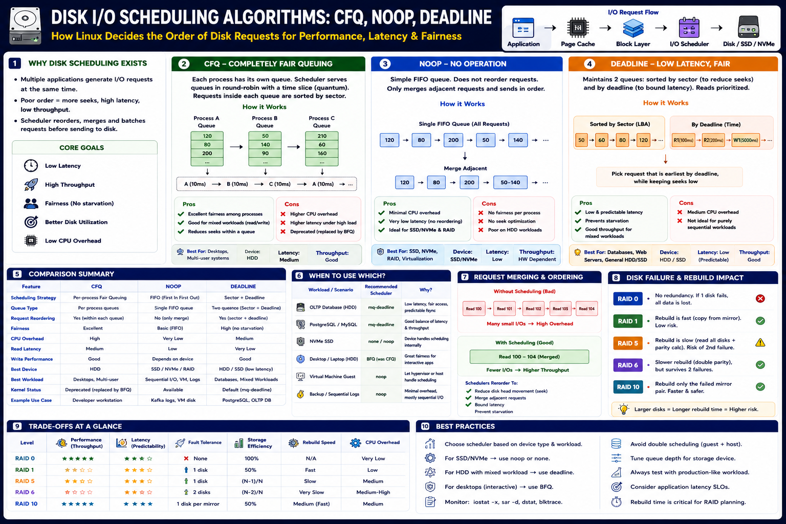

CFQ, NOOP, Deadline — I/O ordering for HDDs, SSDs, NVMe — Staff Engineer level
The Big Picture
Linux decides the order of disk I/O requests before sending them to hardware. The scheduler merges, reorders, and prioritizes requests to maximize throughput, minimize seek time, and provide fairness — but different devices need different strategies.
The Three Classic Schedulers
CFQ — Fairness
Per-process queues. Fair for desktops. High CPU.
NOOP — Simplicity
Minimal overhead. Ideal for SSD/NVMe. Device does the work.
Deadline — Latency
Balanced seek + latency. Best for databases on HDD/SSD.
CFQ — Completely Fair Queuing
Each process gets its own I/O queue and a time slice. Requests within each queue are reordered to reduce seek distance.
| Feature | CFQ |
|---|---|
| Primary Goal | Fairness across processes |
| Queue Type | Per-process |
| Request Reordering | Yes (within each queue) |
| CPU Overhead | High |
| Read Latency | Moderate |
| Best Device | HDD |
| Best Workload | Desktop, multi-user systems |
| Modern Replacement | BFQ (Budget Fair Queueing) |
Modern Linux has largely replaced CFQ with BFQ (Budget Fair Queueing) for better desktop interactivity.
NOOP — Minimal Scheduler
Only merges adjacent requests and dispatches in FIFO order. No seek optimization. Works because SSDs/NVMe controllers internally optimize I/O.
| Feature | NOOP |
|---|---|
| Primary Goal | Minimal CPU overhead |
| Queue Type | Single FIFO |
| Request Reordering | No |
| CPU Overhead | Very Low |
| Latency | Very Low |
| Best Device | SSD, NVMe, hardware RAID |
| Best Workload | VMs, sequential I/O, NVMe workloads |
SSD/NVMe controllers have their own parallel queues and wear-leveling — adding a software reorder scheduler is wasted overhead.
Deadline — Latency-Bounded Scheduling
Maintains two queues: one sorted by disk sector (for seek efficiency) and one by deadline (to prevent starvation). Reads get 500 ms deadlines; writes get 5000 ms.
| Feature | Deadline |
|---|---|
| Primary Goal | Predictable latency |
| Queue Type | Sector-sorted + deadline-sorted |
| Request Reordering | Yes |
| CPU Overhead | Medium |
| Read Latency | Very Low |
| Best Device | HDD, SSD |
| Best Workload | Databases, web servers, mixed I/O |
| Modern Version | mq-deadline (multi-queue block layer) |
Full Scheduler Comparison
| Feature | CFQ | NOOP | Deadline |
|---|---|---|---|
| Strategy | Per-process fair queuing | FIFO + merge | Sector + deadline |
| Fairness | Excellent | Basic | High |
| Read Latency | Moderate | Low | Excellent |
| CPU Overhead | High | Lowest | Medium |
| HDD Performance | Excellent | Poor | Excellent |
| SSD Performance | Moderate | Excellent | Excellent |
| Best For | Desktop / multi-user | SSD / NVMe / VMs | Databases / servers |
HDD vs SSD — Different Needs
HDD — Mechanical
Seek distance matters. Reordering requests reduces head movement.
Use: mq-deadline or CFQ/BFQ
SSD / NVMe — Flash
No moving parts. Controller manages parallel queues internally. Reordering adds overhead without benefit.
Use: none or NOOP
Request Merging — Free Throughput
All schedulers merge adjacent block requests before dispatch.
Merging is performed by all schedulers. It's the cheapest form of I/O optimization and works for both HDDs and SSDs.
Modern Linux — blk-mq Schedulers
Linux now uses the Multi-Queue Block Layer (blk-mq) for multi-core and high-throughput NVMe storage.
| Scheduler | Best Use Case |
|---|---|
| BFQ | Desktop fairness, interactive responsiveness (replaces CFQ) |
| mq-deadline | Databases, HDD, mixed workloads (replaces deadline) |
| none | NVMe SSDs — device handles all scheduling |
| Kyber | Low-latency SSD workloads with QoS |
Staff Engineer Thinking
Junior
Which scheduler is fastest?
Senior
Should we use Deadline or NOOP?
Staff asks
Production Failure Scenarios
Slow Database on HDD
Cause: CFQ on busy HDD → reads stuck behind writes · Fix: Switch to mq-deadline
High CPU on NVMe Server
Cause: Complex scheduler adding overhead on NVMe · Fix: Use none
VM Storage Bottleneck
Cause: Guest OS + hypervisor both scheduling (double scheduling) · Fix: Use NOOP in guest, let hypervisor schedule
Desktop Audio/Video Stutter
Cause: NOOP on shared HDD — no fairness, one process starves another · Fix: Use BFQ for interactive responsiveness
Staff Engineer Decision Framework
| Workload / Device | Recommended Scheduler |
|---|---|
| PostgreSQL / MySQL on HDD | mq-deadline |
| PostgreSQL / MySQL on SSD | mq-deadline or none |
| NVMe SSD (any workload) | none |
| Desktop Linux | BFQ |
| Virtual Machine guest | NOOP |
| Kafka / sequential logs | NOOP / none |
| General-purpose HDD server | mq-deadline |
| Hardware RAID controller | NOOP |
Production Debugging Checklist
lsblk -d -o name,rota (rota=1 = HDD, 0 = SSD)cat /sys/block/sda/queue/scheduleriostat -x 1iostat -x (avgqu-sz)fio before and after changing schedulerblk-mq is active: cat /sys/block/sda/queue/nr_requestsKey Takeaways
